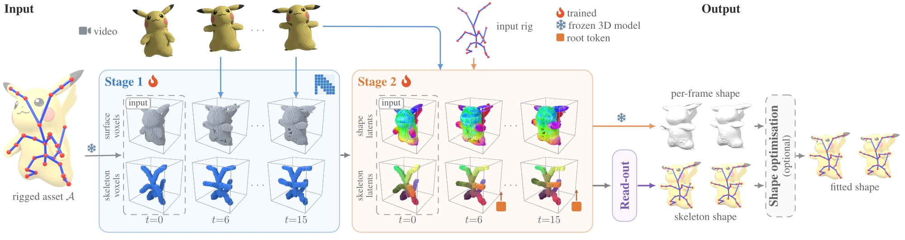
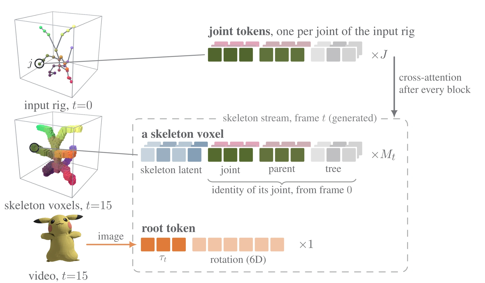
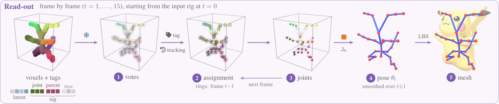
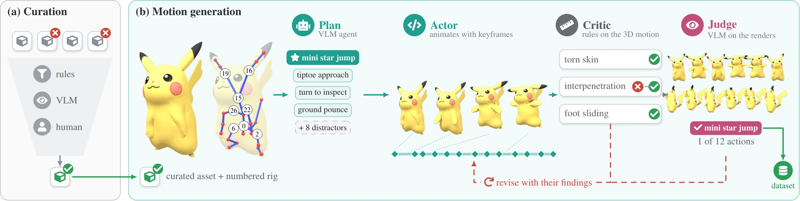

Video
Abstract
Reconstructing animatable 3D assets from video is fundamental to 3D content creation. Recent feed-forward video-to-4D methods efficiently reconstruct motion through vertex-based deformation, but often distort rigid parts, stretch geometry, and fuse nearby parts. Skeletal animation offers a structured alternative, yet diverse skeleton topologies and scarce animated 3D data make learning across objects challenging.
Our key insight is that rigged image-to-3D models pretrained on large-scale static data provide generalisable geometric and articulation priors useful for video-conditioned skeletal animation. Building on these priors, we introduce Ani4D, which predicts posed geometry and skeletons across frames, then recovers joint transformations on the asset's kinematic tree and applies linear blend skinning to produce structurally consistent animations. When no asset is given, an off-the-shelf generator and rigger produce one from the first frame, enabling video-only reconstruction of a rigged asset and its motion.
To overcome 4D data scarcity, we develop an agentic pipeline that curates existing animations and generates and validates new motions, yielding 15,100 clips (4,400 agent-generated). On both our AniBench benchmark of 50 clips with unseen skeletons and four viewpoints each, and the existing MeshBench in the video-only setting, our method outperforms prior video-to-4D approaches across multiple metrics while better preserving part rigidity.
One model, any skeleton
Each card shows the input video, our output from the input camera with its posed skeleton, and the same output from a camera swinging around it.
Comparison with prior art
Failure modes of vertex-based deformation
Vertex-based methods move every vertex on its own, with no notion of parts. Pick a problem to see it up close: each zooms in on one moment, with all three vertex-based baselines beside the ground truth and Ani4D. Step through it frame by frame, slow it down, colour it by its error against the ground truth, or drag to turn it.
error: distance from the ground truthMore comparisons
error: distance from the ground truth Drawn live in 3D: how far each point of each output lies from the same point of the ground truth, as a share of the asset’s size; grey is within 2%.
Drag the row to turn it in 3D · ⌘/Ctrl + scroll, or pinch, to zoom · double-click to go back to the input camera's view. Skeletons: the ground truth's rig, and the poses Ani4D and SkelMo give it.
Scores under each column: CD-4D · CD-M · MPJPE for this clip and camera (lower is better; best in green). Keys: space play or pause, ← → step a frame, [ ] previous or next clip. Save frame downloads exactly the grid shown: the columns you picked, in the current colouring.
Two temporal flows and a deterministic pose read-out
Ani4D builds on AniGen, a pretrained rigged image-to-3D model that represents an object's skeleton as a set of voxels inside the object. It keeps AniGen's two stages, initialised from its pretrained flows, and adapts them to video with temporal attention to the neighbouring frames and to frame 0, which holds the input asset.

Sparse-Structure Flow
A flow model generates each frame's occupancy: the surface voxels and the skeleton voxels, in that frame's own bounding cube. Each frame attends to the frames within two of it and to frame 0, which holds the input asset, kept clean as a fixed anchor.
Structured-Latent Flow
A second flow fills the voxels with the pretrained model's shape, skinning and skeleton latents. Each skeleton voxel also carries a 9-number joint identity, which says which joint of the input rig it belongs to, and a root token per frame carries the root's translation and rotation relative to frame 0. We train the self-attention layers, the skeleton stream and the new layers.
Pose Read-Out
- Votes: Each skeleton voxel votes for its joint's position.
- Assignment: Tags and tracking assign each vote to an input joint.
- Joints: Each joint is the mean of its votes, placed by the root token.
- Pose: Joint rotations follow in closed form, with temporal smoothing.
- Mesh: Linear blend skinning poses the input mesh.
Optionally, shape optimisation refines the pose towards stage 2's per-frame shapes; the results on this page do not use it.
More detail: stage 2's skeleton stream and the read-out


Video-only reconstruction in the wild
An in-the-wild video comes with no 3D asset. TRELLIS.2 generates a mesh from the first video frame and SkinTokens its skeleton and skinning weights; Ani4D then animates it as a given asset. Cards show the input video, our animated asset with its skeleton, and a swinging camera.
Dataset
Rigged, animated 3D assets are scarce, noisy and dominated by walk, run and idle cycles. We curate collected animations with rule-based audits, vision–language review and human review. We then generate new motion on their own rigs in an actor–critic loop with a separate judge: a vision–language model plans actions and keyframes joint rotations, a geometric critic checks each clip in 3D, a vision–language judge must recognise its action among 12 labels, and failed clips are repaired or revised.

A sample of generated actions
Click a caption to watch the clips the agent generated for it, rendered from the front camera at their own speed. Each action was generated on several assets, each on its own rig; the number says how many.
Ani4D on generated motions
Quantitative comparison
CD-3D, CD-4D and CD-M are Chamfer distances measured per frame, from the first frame, and along points tracked from the first frame (shape, where it goes, and motion); MPJPE is the mean joint position error. PSNR, SSIM, LPIPS, CLIP and FVD compare renders of each output in the input's colours with the ground truth from four cameras. Each panel is one metric: bars start at zero, and SSIM and CLIP, close to their maximum of 1, are dots on a zoomed scale.
AniBench, with the ground-truth first-frame mesh given to every method.
Averaged over AniBench's 50 clips and their four viewpoints. Skeletal methods additionally receive the rig.
| Method | CD-3D (lower is better) | CD-4D (lower is better) | CD-M (lower is better) | MPJPE (lower is better) | PSNR (higher is better) | SSIM (higher is better) | LPIPS (lower is better) | CLIP (higher is better) | FVD (lower is better) |
|---|---|---|---|---|---|---|---|---|---|
| ActionMesh | 0.0271 | 0.0620 | 0.1304 | 0.0516 | 18.83 | 0.9038 | 0.0836 | 0.9775 | 381.9 |
| Motion 3-to-4 | 0.0307 | 0.0666 | 0.1363 | 0.0569 | 18.74 | 0.9031 | 0.0869 | 0.9732 | 439.8 |
| Mesh4D | 0.0337 | 0.0594 | 0.1377 | 0.0527 | 17.34 | 0.8853 | 0.1029 | 0.9691 | 592.2 |
| SkelMo | 0.0324 | 0.0616 | 0.1380 | 0.0565 | 18.34 | 0.8958 | 0.0900 | 0.9747 | 491.4 |
| Ani4D (feed-forward) | 0.0226 | 0.0408 | 0.0928 | 0.0364 | 19.48 | 0.9060 | 0.0758 | 0.9801 | 365.1 |
| Ani4D + shape optimisation | 0.0198 | 0.0378 | 0.0864 | 0.0355 | 19.75 | 0.9088 | 0.0711 | 0.9823 | 333.6 |
AniBench from the video alone: the first-frame mesh is generated by TRELLIS.2 and its rig by SkinTokens.
Averaged over AniBench's 50 clips and their four viewpoints. Skeletal methods additionally receive the rig. *Sculpt4D generates a new mesh per frame, so CD-M, MPJPE and appearance are undefined.
| Method | CD-3D (lower is better) | CD-4D (lower is better) | CD-M (lower is better) | MPJPE (lower is better) | PSNR (higher is better) | SSIM (higher is better) | LPIPS (lower is better) | CLIP (higher is better) | FVD (lower is better) |
|---|---|---|---|---|---|---|---|---|---|
| ActionMesh | 0.0552 | 0.0886 | 0.1592 | 0.0613 | 15.28 | 0.8640 | 0.1501 | 0.9395 | 768.0 |
| Motion 3-to-4 | 0.0588 | 0.0926 | 0.1653 | 0.0638 | 15.22 | 0.8626 | 0.1530 | 0.9324 | 859.2 |
| Mesh4D | 0.0587 | 0.0858 | 0.1684 | 0.0594 | 15.15 | 0.8595 | 0.1545 | 0.9341 | 916.9 |
| SkelMo | 0.0621 | 0.1056 | 0.2026 | 0.0794 | 14.91 | 0.8575 | 0.1596 | 0.9340 | 901.8 |
| Sculpt4D* | 0.0634 | 0.1228 | — | — | — | — | — | — | — |
| Ani4D (feed-forward) | 0.0532 | 0.0764 | 0.1422 | 0.0513 | 15.55 | 0.8653 | 0.1469 | 0.9381 | 819.9 |
| Ani4D + shape optimisation | 0.0517 | 0.0736 | 0.1354 | 0.0502 | 15.67 | 0.8666 | 0.1451 | 0.9394 | 810.4 |
MeshBench from the video alone, with the same first-frame setup: mesh from TRELLIS.2, rig from SkinTokens.
Over 6 frames, averaged over 50 clips (MPJPE over the 37 with skeletons). Sculpt4D generates a new mesh per frame, so its CD-M and MPJPE are undefined.
| Method | CD-3D (lower is better) | CD-4D (lower is better) | CD-M (lower is better) | MPJPE (lower is better) |
|---|---|---|---|---|
| ActionMesh | 0.0597 | 0.1149 | 0.2000 | 0.0564 |
| Motion 3-to-4 | 0.0612 | 0.1179 | 0.1981 | 0.0573 |
| Mesh4D | 0.0639 | 0.1136 | 0.2113 | 0.0554 |
| SkelMo | 0.0659 | 0.1216 | 0.2188 | 0.0631 |
| Sculpt4D | 0.0666 | 0.1427 | — | — |
| Ani4D (feed-forward) | 0.0603 | 0.1122 | 0.1963 | 0.0528 |
| Ani4D + shape optimisation | 0.0592 | 0.1105 | 0.1916 | 0.0510 |
BibTeX
@article{he2026ani4d,
title = {Ani4D: Animatable 4D Mesh Reconstruction from Monocular Video},
author = {He, Angel Y. and Vedaldi, Andrea and Jiang, Zeren},
journal = {arXiv preprint},
year = {2026}
}